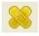
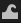

PRÀCTICA 8.¶
CIRURGIA ESTÈTICA AMB GIMP¶
Aquesta pràctica consta de diversos exercicis
Exercici 1. Retoc de rostre¶
A la següent pràctica eliminarem les arrugues dels ulls a la cara d'una dona
{kind=link}
1r Obre la imatge somriure.xcf.
2n En el retoc d'imatges de persones cal no exagerar l'actuació sobre la imatge. Cal ser subtil. Per això és interessant duplicar la capa: a la llista de capes, selecciona la capa de fons i duplica-la (clic botó dret del ratolí --> duplicar la capa).
{kind=link}
D'aquesta manera, en una capa es tindrà la imatge original i en una altra capa la imatge retocada, per anar controlant els canvis realitzats. Nosaltres actuarem a la imatge a la capa copiada.
Algunes indicacions de la finestra de CAPES:
- Capa amb fons blau: capa seleccionada sobre la qual es treballarà.
- Icona de l'ull: fixa la capa com a visible o no visible.
- El nom de la capa es pot canviar.
- La icona de la cadena serveix per enllaçar o unir diverses capes, per moure-les de forma
- conjunta
3r Apropar-se a la imatge mitjançant l'eina de zoom + (es pot moure la imatge mantenint premuda la tecla espai i movent el ratolí).
4t Seleccionar l'eina Cicatritzat , que permet corregir irregularitats a la imatge.
{kind=link}
{kind=link}
Seleccionar un pinzell gran i tort (Calligraphic Brush#2). Fixar opacitat 50 i seleccionar esvaïment.
{kind=link}
Aquesta eina funciona de manera molt similar a la de clonar: seleccionar una zona amb la tecla
CTRL (així se selecciona la textura i el color de la zona). Ara deixar anar la tecla CTRL i se'n va
prement sobre les zones que es volen netejar (per exemple. punxar en zones properes a les
arrugues amb la tecla CTRL seleccionada, deixar anar el CTRL i corregir a poc a poc i amb paciència les
arrugues.
{kind=link}
Abans Després
5è Per finalitzar desa amb el nom AOFGIMP08_1_llinatge_nom.jpg
{kind=link}
Fitxer pràctica 8 exercici 1
{kind=link}
Exercici 2: Retoc de rostre¶
Treu-li les arrugues a la següent foto:
{kind=link}
Guardaras el fitxer com AOFGIMP08_2_llinatge_nom.gif
Fitxer pràctica 8 exercici 2
{kind=link}
{kind=link}
Exercici 3 Aprimar-se amb gimp¶
{kind=link}
Observa el canvi
{kind=link}
ara vegem com fer-ho:
1 Descarregueu la imatge i obri-la a gimp
2 Feu clic al menú capa - duplicar la capa. d'aquesta manera podrem veure l'abans i el després de l'efecte.
3 Feu clic a l'eina "Transformació deformant"  de la caixa d'eines
{kind=link}
4 En el quadre de diàleg que apareix fes clic i arrossega amb suavitat sobre les zones que es vol reduir. Repeteix el procés fins a assolir l'efecte desitjat.
5 Si t'equivoques, pots fer clic a reiniciar (o a CTRL+Z) per recuperar la imatge original.
6 Per acabar fes clic en acceptar.
Desa amb el nom AOFGIMP08_3_llinatge_nom.jpg
{kind=link}